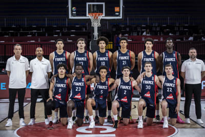
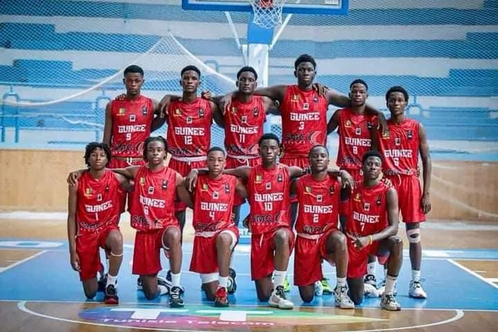
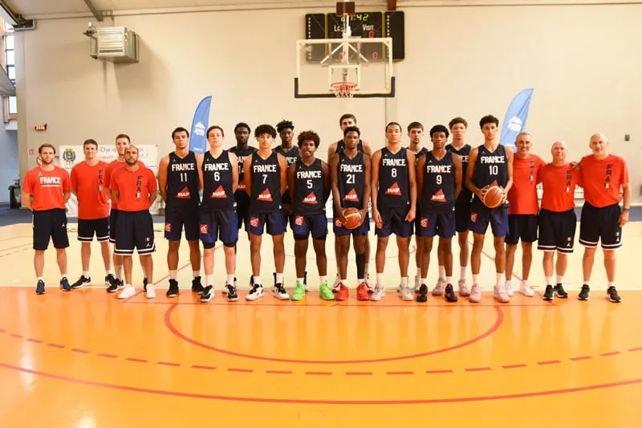
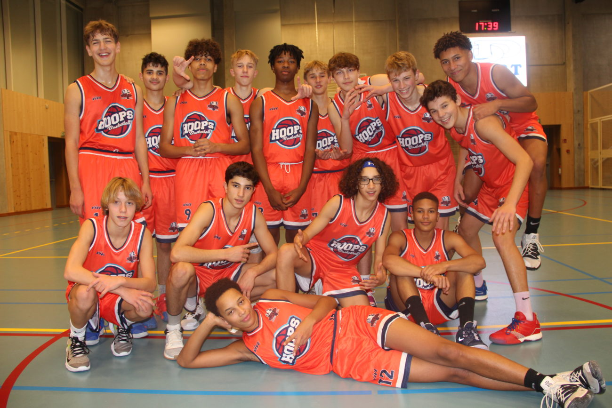
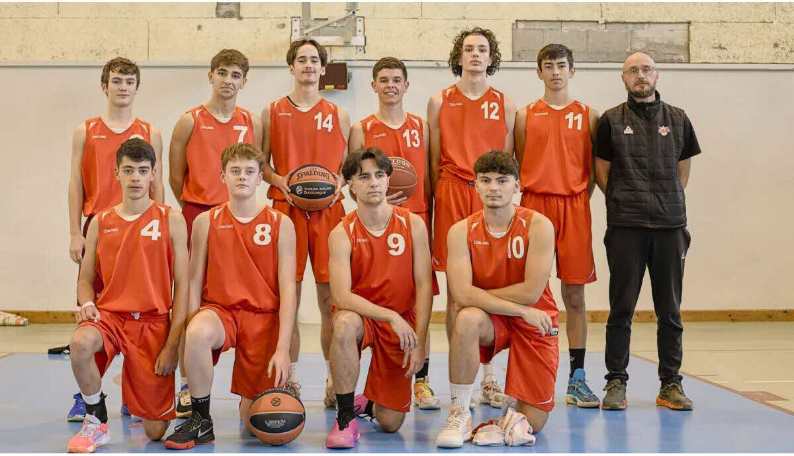
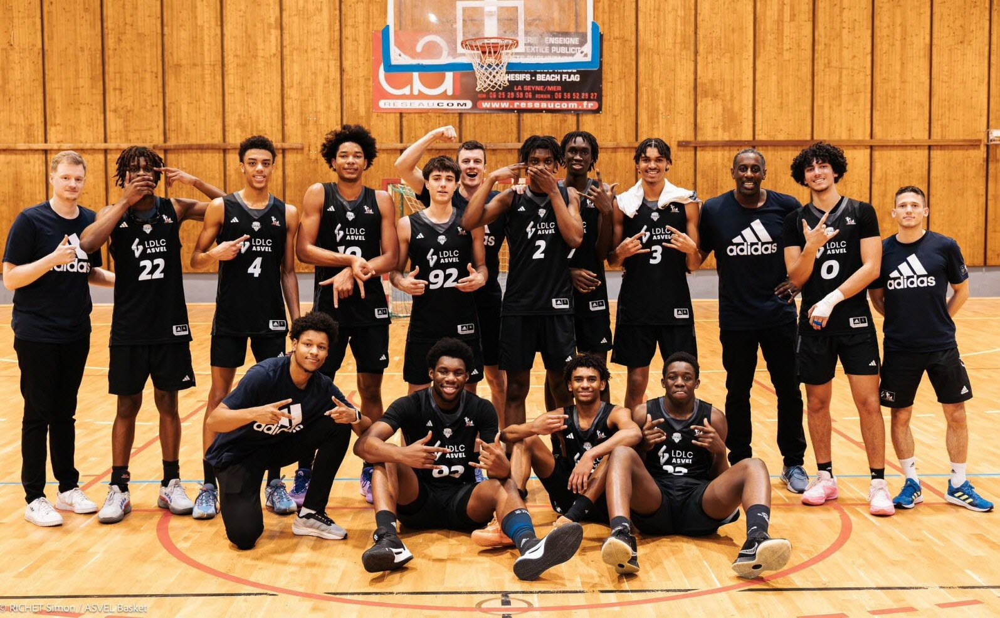
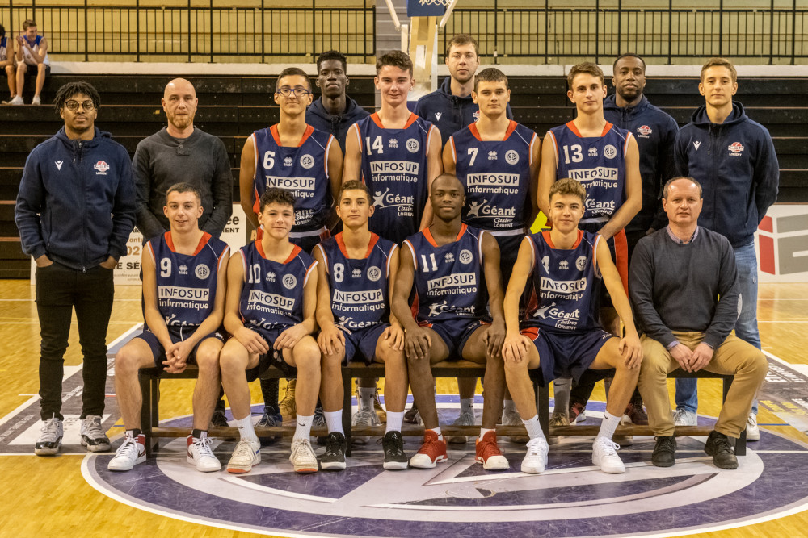

Ville et catégorie
Bruxelles, catégorie U17.
Chaque section reprend l'identité, le style de jeu, l'objectif et l'effectif principal des équipes engagées dans l'édition 2026.
Équipe rapide et agressive sur les lignes de passe, avec un collectif très discipliné en transition.
Bruxelles, catégorie U17.
Atteindre la finale grâce à une défense haute et un tempo très soutenu.

Formation solide au rebond, très structurée dans le jeu placé et difficile à bouger au contact.
Bruxelles périphérie, catégorie U17.
Jeu intérieur puissant, rythme maîtrisé et bonne rigueur défensive.

Une équipe intense qui mise sur les interceptions, la pression tout terrain et les paniers rapides.
Bruxelles, catégorie U17.
Un backcourt très actif capable de faire basculer un match en quelques possessions.

Collectif appliqué avec de bons automatismes et une capacité à casser le rythme adverse.
Auderghem, catégorie U17.
Circulation de balle propre, bon spacing et défense compacte sur demi-terrain.

Équipe ambitieuse qui s'appuie sur une belle densité physique et un effectif équilibré.
Bruxelles, catégorie U18.
Finir en tête de poule et imposer une vraie autorité dans les duels.

Profil athlétique, agressif sur les aides défensives et dangereux dès que le match s'ouvre.
Bruxelles nord, catégorie U18.
Une grande capacité à convertir les contre-attaques et à jouer sur l'énergie.

Une équipe technique qui valorise l'adresse extérieure et la lecture collective du jeu.
Bruxelles sud, catégorie U18.
Beaucoup d'écrans loin du ballon, tirs extérieurs et circulation rapide.

Formation spectaculaire qui cherche à imposer un rythme offensif soutenu et un jeu aérien.
Bruxelles centre, catégorie U18.
Séduire le public et confirmer son statut d'équipe spectaculaire du tournoi.
